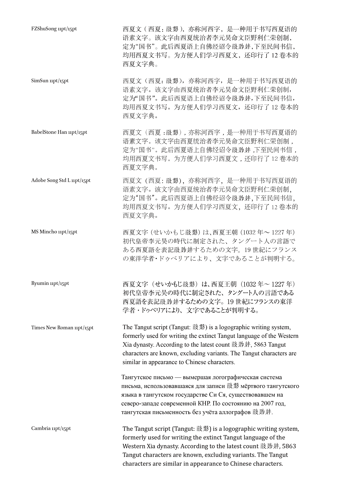
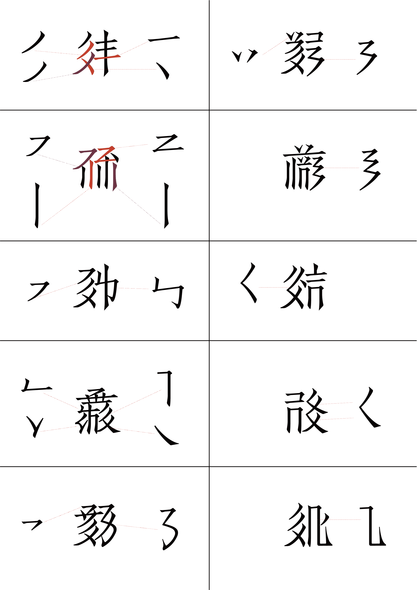
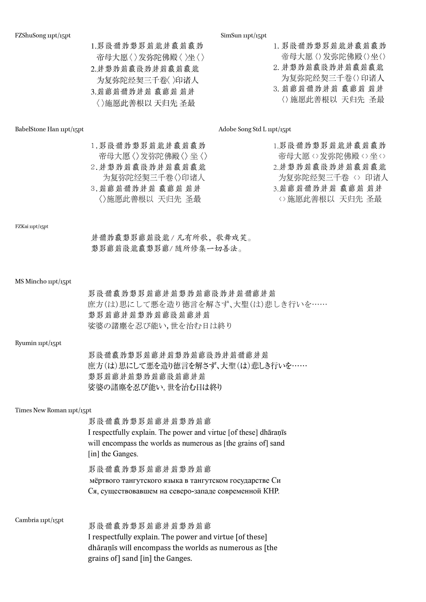
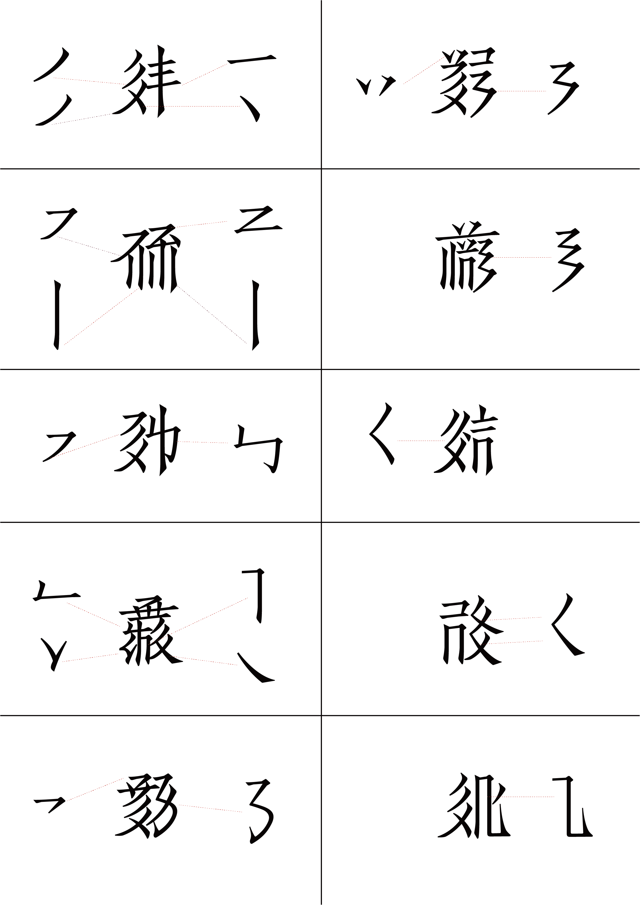

Historical Reinterpretation via Variable Font Technology.
Developed as part of my PhD research, TangutBux is a typeface based on a historical woodblock print by an engraver whose family name was Bu (卜). Since the engraver's first name remains unknown, 'X' is often used to complete the name. It is an ongoing work-in-progress project focused on specialized research constraints.
Research & Design Credit
Type Design
Xicheng Yang
Context
PhD Research Core Matrix
Current Use
Official Header System of Alphabette

Sheet 01 // Typography Parallel Test Columns
Left: TangutBux Text Baseline // Right: Secondary Parametric Variants




Sheet 02 // Variable Axis Motion Interpolation
Responsive vector morphing across weight and structural parameters
Type in Use: TangutBux
TangutBux was deployed in Alphabettes' header system. The header presents a phonetic transliteration of “Alphabettes” in Tangut, read as “a lə pha be tshi”.